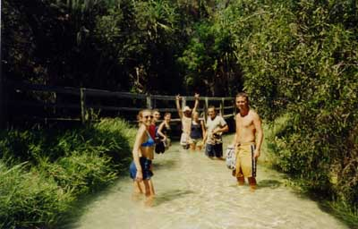
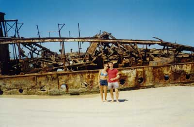
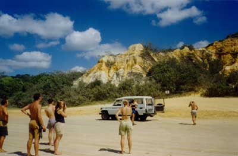
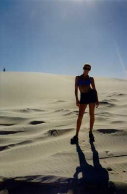
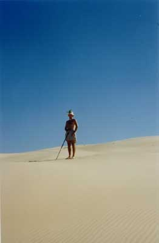

| The Crew on Fraser (minus Kim), wading up an impossibly clear stream. Brian in the background giving us a full metal salute. |  |
|  | Bec and I on the main beach at Fraser, which is 120km long, by a ship that was wrecked on it in the '20s or '30s. I used to be a historian. |
| By the coloured stones - what were they called? - that Bec appropriated. |  |
|
Our campground for the first night, on the beach, with Shannon giving us a big hello |
| Bec doing a Lawrence of Arabia, one of the many different environments on the island |  |
|  | Brian doing a better Lawrence; the man was born to the role! |